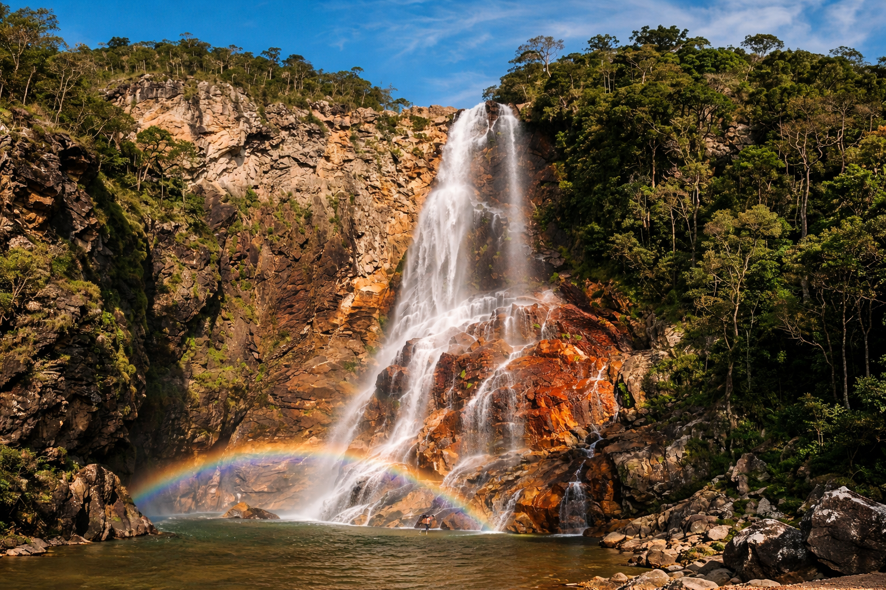

Pousadas, restaurantes e atrações turisticas.
⭐ Próximo à Cachoeira do Serrado

A principal atração da região. Beleza natural e águas cristalinas.
 Fale com um guia
Fale com um guia
Fale com um guia
Fale com um guia